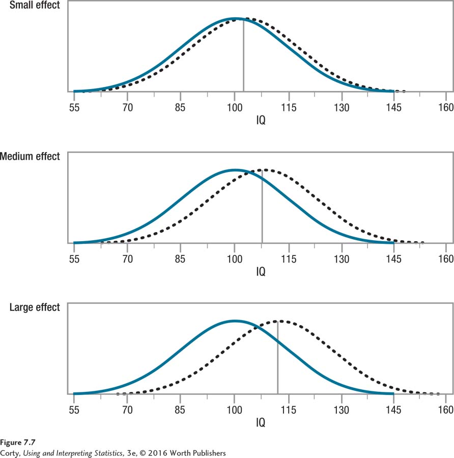

Figure 7.10: Figure 7.7 Examples of Small, Medium, and Large Effect Sizes This figure uses the distribution of IQ scores for two different groups to show effect sizes. In each panel, the solid-line curve shows the set of scores for the control group and the dotted-line curve shows the set of scores for the experimental group. In each panel, the experimental group has a higher mean IQ. The top panel (Small effect) shows what Cohen (1988) calls a small effect size (d = 0.20), the middle panel (Medium effect) a medium effect size (d = 0.50), and the bottom panel (Large effect) a large effect size (d = 0.80). These are mean differences, respectively, of 3, 7.5, and 12 IQ points. Notice how the differentiation between the two groups in each panel increases as the size of the effect increases, both in terms of increasing distance between the two means and decreasing overlap between the two distributions.